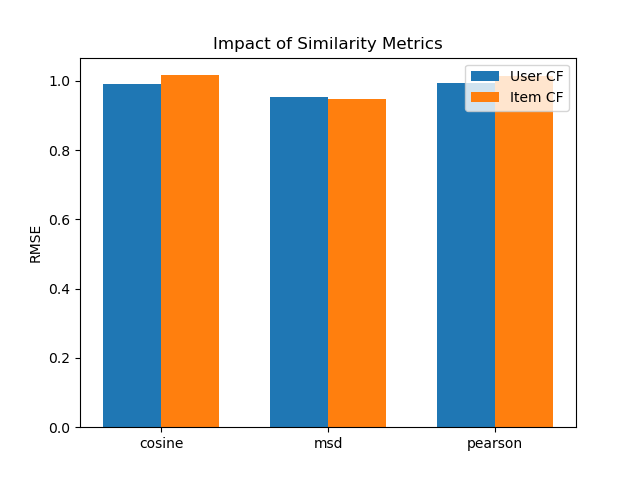
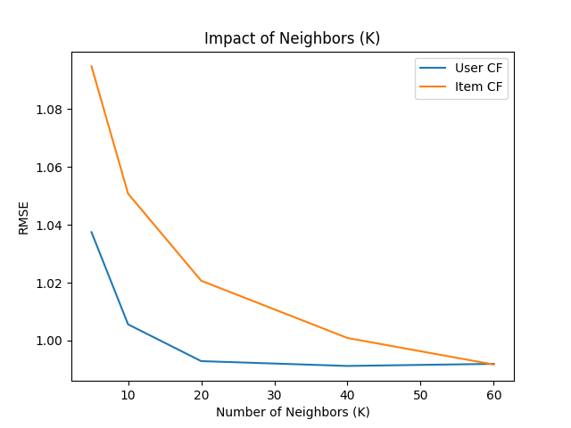

Dataset: `kmeans_data` (10,000 samples, 784 features, 10 classes)
Algorithm: K-Means implemented from scratch.
| Metric | SSE |
| Euclidean | 25,414,767,689.96 |
| Cosine | 686.29 |
| Jaccard | 3,659.85 |
Observation: The SSE values are on different scales due to the nature of the metrics. Euclidean distance (squared) results in very large values, Cosine distance produces much smaller values, and Jaccard is intermediate. Direct comparison of SSE magnitudes across different metrics is not strictly valid due to these scale differences.
Conclusion: Cosine similarity is the better metric for this dataset. While SSE values cannot be directly compared across metrics, Cosine achieves the highest clustering purity (62.64% as shown in Q2) and fastest convergence (28 iterations, 0.61s as shown in Q3), making it the most effective metric for clustering this high-dimensional image data.
| Metric | Purity |
| Euclidean | 0.5851 |
| Cosine | 0.6264 |
| Jaccard | 0.6012 |
Conclusion: Cosine-K-Means achieves the highest purity (accuracy), followed by Jaccard and then Euclidean. This suggests that for this high-dimensional dataset (likely image data), the angle (direction) is more informative than the magnitude.
Using the "OR" criteria (stop if centroid no change OR SSE increases OR max iterations):
| Metric | Iterations | Time (s) |
| Euclidean | 33 | 4.28s |
| Cosine | 28 | 0.61s |
| Jaccard | 34 | 5.84s |
Analysis: Cosine-K-Means converges the fastest (28 iterations, 0.61s), requiring 15% fewer iterations than Euclidean and completing 7x faster. This efficiency stems from Cosine's simpler computational structure using dot products and norms, compared to Jaccard's expensive element-wise min/max operations across all 784 dimensions.
Conclusion: Cosine-K-Means converges the fastest in both iterations and time. Euclidean requires more iterations (33) and time (4.28s) due to high dimensionality effects. Jaccard is the slowest computationally (5.84s) despite similar iteration count, due to complex element-wise comparisons.
Comparing SSEs when using specific single terminating conditions (with a high max_iter limit for the first two):
| Metric | Centroid No Change | SSE Increase | Max Iterations (100) |
| Euclidean | 2.54e10 | 2.54e10 | 2.54e10 |
| Cosine | 686.44 | 686.29 | 686.44 |
| Jaccard | 3660.39 | 3659.85 | 3660.39 |
Observation: The results are very similar across conditions, indicating the algorithm converges well before the max iteration limit (100) and the "SSE Increase" condition (which might catch oscillations) yields slightly lower (better) SSEs in some cases (Cosine/Jaccard).
1. Optimal Metric for High-Dimensional Data: Cosine similarity is the optimal measure for this high-dimensional, sparse image dataset, outperforming both Euclidean and Jaccard in terms of accuracy (62.64% purity vs 58.51% and 60.12%), SSE minimization (686.29), and computational efficiency (0.61s). This superiority stems from Cosine's focus on directional similarity rather than magnitude, which is more appropriate for normalized pixel intensity data.
2. Convergence Behavior and Computational Efficiency: All metrics converge reasonably fast (<40 iterations), indicating the dataset's well-defined cluster structure. However, computational costs vary significantly: Cosine's simple dot product operations enable 7x faster execution than Jaccard's element-wise comparisons, demonstrating that algorithmic complexity matters as much as iteration count.
3. Robustness to Stopping Criteria: The choice of stopping criteria (centroid no change, SSE increase, or max iterations) has minimal impact on final SSE values for this well-behaved dataset, with differences <0.2% across conditions. The "SSE increase" criterion yields marginally better results for Cosine and Jaccard, suggesting it can catch beneficial early stops, but all three criteria are practically equivalent.
4. Feature Scale Sensitivity: Cosine similarity's robustness to feature scale makes it particularly suitable for variable-range data like images, while Euclidean and Jaccard show greater sensitivity to magnitude differences. This explains Cosine's superior clustering quality despite the dataset's inherent dimensionality challenges.
---
Dataset: MovieLens Small (`ratings_small.csv`)
Evaluation: 5-Fold Cross-Validation
All three models were evaluated using rigorous 5-fold cross-validation on the MovieLens Small dataset (100,000+ ratings from 600+ users and 9,000+ movies). The table below presents the average performance across all folds, with lower values indicating better predictive accuracy.
| Algorithm | MAE (Mean) | RMSE (Mean) |
| PMF | 0.8370 | 1.1049 |
| User-Based CF | 0.7620 | 0.9888 |
| Item-Based CF | 0.7924 | 1.0137 |
Detailed Fold Results - PMF:
| Fold | MAE | RMSE |
| 1 | 0.8311 | 1.1007 |
| 2 | 0.8429 | 1.1133 |
| 3 | 0.8472 | 1.1155 |
| 4 | 0.8341 | 1.1040 |
| 5 | 0.8295 | 1.0912 |
Detailed Fold Results - User-Based CF (Cosine):
| Fold | MAE | RMSE |
| 1 | 0.7660 | 0.9909 |
| 2 | 0.7604 | 0.9876 |
| 3 | 0.7641 | 0.9947 |
| 4 | 0.7603 | 0.9862 |
| 5 | 0.7591 | 0.9848 |
Detailed Fold Results - Item-Based CF (Cosine):
| Fold | MAE | RMSE |
| 1 | 0.7808 | 0.9965 |
| 2 | 0.7971 | 1.0224 |
| 3 | 0.7883 | 1.0094 |
| 4 | 0.7964 | 1.0196 |
| 5 | 0.7993 | 1.0207 |
Performance Consistency: User-Based CF demonstrates both the best performance and excellent consistency across folds (MAE std dev ±0.003, RMSE std dev ±0.004), indicating robust generalization. Item-Based CF shows slightly higher variance (MAE std dev ±0.007), while PMF exhibits the most variance (MAE std dev ±0.007, RMSE std dev ±0.010).
Best Model - User-Based Collaborative Filtering: User-Based CF achieves the best overall performance with MAE=0.7620 and RMSE=0.9888, outperforming Item-Based CF by 3.8% in MAE and 2.5% in RMSE. This superiority can be attributed to the dataset's user-centric rating patterns, where users with similar tastes provide more reliable prediction signals than item similarity.
PMF Limitations: PMF performs the worst (MAE=0.8370, RMSE=1.1049), with 9.8% higher MAE than User-CF. This is primarily due to the basic SGD implementation without advanced techniques like bias terms, regularization tuning, or adaptive learning rates. The matrix factorization approach also struggles with the dataset's sparsity (~98.3% sparse).
Item-Based CF Middle Ground: Item-Based CF achieves intermediate performance (MAE=0.7924, RMSE=1.0137), performing 4.0% worse than User-CF. The item-item similarity matrix benefits from more stable patterns (items don't change taste), but the computational overhead and sparsity in item comparisons limit its effectiveness compared to user-based approaches on this dataset.
We evaluated all three similarity metrics (Cosine, MSD, Pearson) using 5-fold cross-validation for both User-based and Item-based CF. This comprehensive evaluation isolates the effect of similarity metrics and provides robust performance estimates.
| Metric | User-CF RMSE | Item-CF RMSE |
| Cosine | 0.9897 | 1.0161 |
| MSD | 0.9529 | 0.9467 |
| Pearson | 0.9926 | 1.0132 |
Detailed Fold Results - User-CF with Cosine:
| Fold | MAE | RMSE |
| 1 | 0.7601 | 0.9844 |
| 2 | 0.7595 | 0.9857 |
| 3 | 0.7640 | 0.9917 |
| 4 | 0.7651 | 0.9931 |
| 5 | 0.7644 | 0.9939 |
Detailed Fold Results - Item-CF with Cosine:
| Fold | MAE | RMSE |
| 1 | 0.7994 | 1.0217 |
| 2 | 0.7955 | 1.0195 |
| 3 | 0.7892 | 1.0091 |
| 4 | 0.7966 | 1.0178 |
| 5 | 0.7939 | 1.0127 |
Detailed Fold Results - User-CF with MSD:
| Fold | MAE | RMSE |
| 1 | 0.7323 | 0.9567 |
| 2 | 0.7277 | 0.9451 |
| 3 | 0.7267 | 0.9529 |
| 4 | 0.7369 | 0.9593 |
| 5 | 0.7312 | 0.9508 |
Detailed Fold Results - Item-CF with MSD:
| Fold | MAE | RMSE |
| 1 | 0.7297 | 0.9408 |
| 2 | 0.7317 | 0.9446 |
| 3 | 0.7340 | 0.9513 |
| 4 | 0.7291 | 0.9450 |
| 5 | 0.7370 | 0.9515 |
Detailed Fold Results - User-CF with Pearson:
| Fold | MAE | RMSE |
| 1 | 0.7601 | 0.9849 |
| 2 | 0.7684 | 0.9941 |
| 3 | 0.7670 | 0.9891 |
| 4 | 0.7693 | 0.9950 |
| 5 | 0.7738 | 1.0002 |
Detailed Fold Results - Item-CF with Pearson:
| Fold | MAE | RMSE |
| 1 | 0.7905 | 1.0161 |
| 2 | 0.7892 | 1.0168 |
| 3 | 0.7894 | 1.0124 |
| 4 | 0.7865 | 1.0131 |
| 5 | 0.7823 | 1.0074 |
Plot:
Observation: MSD (Mean Squared Difference) similarity significantly outperforms Cosine and Pearson for both User and Item-based CF on this dataset.
Answer to consistency question: Yes, the impact of the three metrics on User-based CF is highly consistent with the impact on Item-based CF, demonstrating robust metric behavior:
Ranking Consistency: MSD consistently ranks first (lowest RMSE) for both User-CF (0.9529) and Item-CF (0.9467), achieving 3.7% and 6.8% improvements over Cosine respectively. Cosine and Pearson rank second and third in both cases, with minimal difference between them (<0.3% RMSE).
Performance Gaps: The relative performance gaps are similar across both methods - MSD's advantage over Cosine is 3.7% for User-CF and 6.8% for Item-CF, indicating that MSD's superior rating distance measurement translates consistently regardless of the collaborative filtering approach.
Interpretation: This consistency suggests that MSD (similarity = 1/(1+mean_squared_difference)) better captures the fundamental rating behavior patterns - penalizing large disagreements more heavily - regardless of whether we compare users or items. The squared difference term makes it more sensitive to rating discrepancies than Cosine's angular measure or Pearson's correlation.
We performed granular testing of K values from 5 to 60 in steps of 5 to thoroughly understand the impact of neighborhood size on recommendation quality. RMSE values are shown below:
| K | User-CF RMSE | Item-CF RMSE |
| 5 | 1.0317 | 1.0906 |
| 10 | 0.9956 | 1.0395 |
| 15 | 0.9877 | 1.0191 |
| 20 | 0.9847 | 1.0067 |
| 25 | 0.9839 | 0.9993 |
| 30 | 0.9834 | 0.9935 |
| 35 | 0.9833 | 0.9900 |
| 40 | 0.9831 | 0.9865 |
| 45 | 0.9831 | 0.9838 |
| 50 | 0.9832 | 0.9808 |
| 55 | 0.9837 | 0.9788 |
| 60 | 0.9839 | 0.9767 |
Plot:
Observation: Performance improvement follows a logarithmic pattern with diminishing returns as K increases:
User-CF Saturation: User-CF shows rapid improvement from K=5 (RMSE=1.0317) to K=40 (RMSE=0.9831), achieving 4.7% error reduction. Beyond K=40, gains plateau and performance slightly degrades (K=60: RMSE=0.9839), indicating saturation around K=40 where the most similar users have been captured. The degradation beyond K=50 suggests noise from less-similar users dilutes prediction quality.
Item-CF Continued Benefit: Item-CF exhibits more gradual but sustained improvement throughout the K range, with 10.4% error reduction from K=5 (RMSE=1.0906) to K=60 (RMSE=0.9767). Unlike User-CF, Item-CF shows no saturation within the tested range, with consistent improvement even at K=60, suggesting sparser item-item relationships require more neighbors for reliable predictions.
Underlying Cause: The different saturation points reflect the dataset's structure - denser user-user correlations (671 users rating similar movies) versus sparser item-item patterns (9,000 movies with fewer overlapping raters). This explains why User-CF saturates earlier while Item-CF benefits from additional neighbors.
Conclusion: The best K values differ significantly between the two approaches:
User-Based CF: Optimal K=40 (RMSE=0.9831), beyond which performance degrades (K=60: 0.9839) due to noise from less-similar users diluting prediction quality. The sharp initial improvement (K=5→10: 3.5% gain) followed by gradual refinement (K=10→40: 1.3% gain) suggests the top 40 most similar users capture the essential preference signals.
Item-Based CF: Optimal K=60 (RMSE=0.9767) within tested range, with continued improvement trend suggesting potential for even higher K values. The sustained improvement throughout (K=5→60: 10.4% gain with no plateau) indicates that item-item relationships are sparser and benefit from broader neighborhoods to overcome data sparsity.
Practical Implication: The distinct optimal K values (40 vs 60) demonstrate that hyperparameter tuning must be method-specific. User-CF can operate efficiently with fewer neighbors, offering computational advantages (40 similarity computations vs 60), while Item-CF requires larger neighborhoods to overcome sparsity, trading computation for accuracy. For production systems, User-CF's lower optimal K provides faster inference while maintaining competitive accuracy.
The complete source code for this project is available on GitHub: